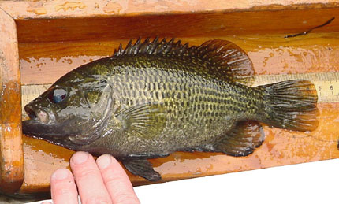

 Wolfert (1980) measured the total length (TL) of 1288 Rock Bass (Ambloplites rupestris) from Eastern Lake Ontario in the late 1970s. In addition, scales were removed for age estimation from as many as 10 specimens from each 10 mm length interval. All data are recorded in RockBass_LO2.csv (view, download, meta). [Note that the filename contains an “oh” not a “zero.”].
In an Age-Length Key exercise, a data.frame was produced that had age assignments for all 1288 fish. Use that data.frame and results from this exercise to answer the questions below (i.e., open and run your script from that exercise and then continue with an analysis for the questions below.)
- Examine the plot of TL versus age. Observe the “shape” of the data (do the results look linear or like a von Bertalanffy growth curve, is there an obvious asymptote, are young fish well represented, how variable are lengths within ages).
- Fit the Gallucci and Quinn (1979) parameterization (see
growthFunShow("vonBertalanffy",param="GQ",plot=TRUE)).
- Interpret the interval estimate for the \(\omega\) parameter.
- Write the Gallucci and Quinn VBGF with parameters replaced by their estimated values.
- Construct 95% bootstrapped confidence intervals for each parameter. Comment on the widths of these confidence intervals. What explains this?
- Predict the mean TL, with 95% confidence interval, for an age-6 Rock Bass. Comment on the width of this confidence interval. What explains this?
- Plot TL versus age and superimpose the best-fit VBGF. Comment on model fit.
- Compute the correlation between parameter values. Comment
- How does the estimate of \(K\) from fitting this parameterization compare to that from the typical VBGF fit in this exercise. Explain your observation.
from Derek H. Ogle , created 21-Jan-16, updated 23-Jun-16, Comments/Suggestions.